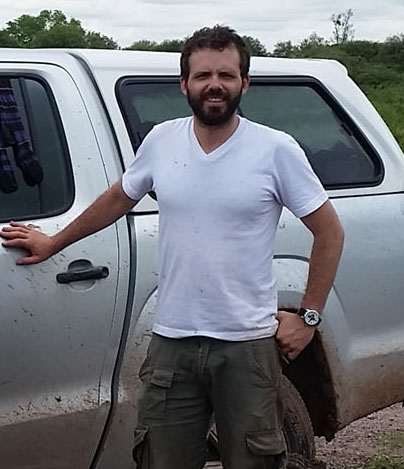
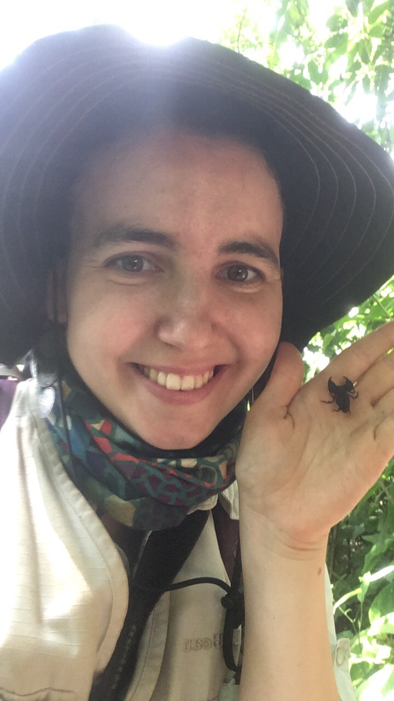
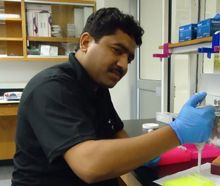
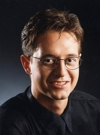
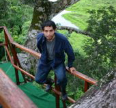
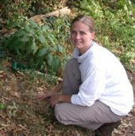
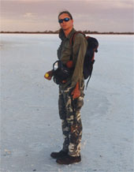

Current Postdocs | Former Postdocs
Current Postdocs|  | Ricardo completed his Biology B.S. at Javeriana University in Bogot. While an undergraduate student, he became interested in arachnids and started working on scorpions from his native country, Colombia. Gradually, hooded thick-spiders (order Ricinulei) and sun-spiders (order Solifugae) became part of his research interests. After a 5-year period working in the pharmaceutical industry, Ricardo moved to Argentina to undertake doctoral studies at the Buenos Aires University. There, he conducted his research at the Division of Arachnology of the Argentinian Museum of Natural Sciences Bernardino Rivadavia. His Ph.D. thesis consisted of a taxonomic revision and phylogenetic analysis of the South American solifuge family Mummuciidae. In 2016, Ricardo visited the AMNH collections, supported by a Theodore Roosevelt Memorial Grant from the AMNH and a Vincent Roth Grant for Systematics Research from the American Arachnological Society. Ricardo is currently a Theodore Roosevelt Postdoctoral Research Fellow from the Richard Gilder Graduate School at the AMNH, and is now working on the evolution of Ricinuleids.
|
2020
(AMNH, New York; DAAD Scholarships)
 |
Fred got his Masters degree in molecular and cellular biology from the Philipps University of Marburg, Germany in 2013. In 2019 he obtained his PhD in molecular biosciences from Stockholm University, Sweden for his work investigating how bacteria fulfill the basic cellular need of maintaining a functional proteome. In his research, Frederic has always been keen on comparative approaches that incorporate the evolutionary perspective enabling a broader and functionally relevant understanding of fundamental biological processes. Becoming convinced of the importance of the evolutionary perspective of his research during his PhD, combined with a long-standing passion for arachnids, he began collaborating on arachnological research projects aimed at enhancing the knowledge of Caribbean arachnid diversity. In February of 2020 he joined the AMNH for a six-months short-term postdoctoral research stay. In his research project funded by the German Academic Exchange Service and a Theodore Roosevelt Memorial Grant he investigates the evolution of Mexican whip spiders.
|
Stephanie Loria
2018-2020
(AMNH, New York)
|  [email protected] |
Stephanie first came to the AMNH as a high school student participating in the High School Science Research Program of the Center for Biodiversity and Conservation with Felicity Arengo. In 2011, she completed her B.S. at Sewanee University in TN. During her B.S. she spent a summer working at the Field Museum of Natural History in Chicago as an NSF REU intern studying the evolution and biogeography of the Malagasy giant pill-millipedes, genus Sphaeromimus, under the guidance of Thomas Wesener and Petra Sierwald. Stephanie entered the Comparative Biology Ph.D. program at the AMNH Richard Gilder Graduate School in 2011 and graduated in 2015. Her dissertation focused on the evolution and biogeography of Southeast Asian scorpions, particularly the family Chaerilidae.
|
2013-2014
(Higher Education Commission, Pakistan)
|  [email protected] |
Tahir received his Ph.D. from University of the Punjab, Lahore, with a dissertation on the "Biodiversity and predatory efficacy of spiders inhabiting the rice fields of central Punjab, Pakistan". He also worked on the scorpions of Pakistan in collaboration with Lorenzo Prendini. He came to the AMNH, in May 2013 for postdoc supported by a Postdoctoral Fellowship by the Higher Education Commission of Pakistan, which focused on the molecular systematics of the medically important scorpions in the family Buthidae occurring in Pakistan. He is currently working as Assistant Professor of Zoology at the University of Sargodha, Pakistan.
|
2009-2011
(AMNH Kalbfleisch Fellowship)
|  | Carsten received his Ph.D. at the Humboldt-Universität zu Berlin, Germany, during which he visited the AMNH on an Annette Kade Fellowship. His research interest comprises the evolution of Arachnida with the focus on terrestrial adaptations. Carsten's Ph.D. thesis was a comprehensive study of the morphology of fully land-adapted book lungs from extant and extinct arachnids. During the course of his post-doctoral research at the AMNH, Carsten examined the Palaeozoic scorpions, testing them for the purported aquatic life. The methodological spectrum he applied for revealing the morphological and anatomical characters, reaches from classical microscopy, through electron microscopy, to cutting-edge microtomographical techniques.
|
2007-2009
(AMNH Kalbfleisch Fellowship)
|  | José completed his Ph.D. at the Universidad Nacional de Cordoba, Argentina. His dissertation reviewed the systematics and biogeography of the scorpions of southern Peru. Jose's research interests include the systematics of the Andean scorpion genera Orobothriurus (Bothriuridae) and Hadruroides (Iuridae). He moved to the AMNH, supported by a Postdoctoral Research Fellowship in 2007. His postdoctoral research project was the first attempt to study the phylogeny of the Neotropical family Chactidae using morphological and genetic data. |
Dana Price
2007-2008
(NSF-BS&I Solifugae Grant, NSF-AToL Spider Phylogeny Grant)
|  | Dana completed her Ph.D. at Rutgers University in the Graduate Program of Ecology and Evolution. The title of her dissertation was Phylogeny, Biogeography and Behavior of the Dung Beetle Genus Phanaeus (Scarabaeidae: Scarabaeinae). In 2007 Dana worked with Lorenzo Prendini as a Postdoctoral Researcher at the AMNH (Division of Invertebrate Zoology) on sun spiders (Solifugae) and scorpions (Vaejovidae) supported by Prendini's NSF BS&I and RevSys grants; she worked for the NSF AToL Spider Phylogeny grant in 2008. Her interests include systematics, behavior, ecology and conservation biology. |
Camilo I. Mattoni
2004-2006
(AMNH Postdoctoral Fellowship)
 |
Camilo completed his Ph.D. at the Universidad Nacional de Córdoba. His dissertation involved a systematic revision of the South American scorpion genus Bothriurus. He moved to
the AMNH, supported by a Postdoctoral Research Fellowship in Genomics, in 2004. The aim of Camilo's postdoctoral research was to produce a robust phylogenetic hypothesis of relationships in the diverse Gondwana scorpion family Bothriuridae, using morphological and genetic data, and a sampling of as many bothriurid species as possible. He is also interested in scorpion ecology, behavior and reproduction, and in theoretical aspects of cladistics. One of his most recent contributions provides the first detailed description and comparison of the genital plugs in scorpions. |
Erich S. Volschenk
2003-2006
(AMNH Postdoctoral Fellowship)
|  | Erich completed his Ph.D. at Curtin University, Perth. His Ph.D. dissertation involved a systematic revision of the Australian buthid genera. He began a Postdoctoral Research Fellowship in Genomics at the AMNH in 2003. His postdoctoral research project is the first serious attempt to investigate the phylogeny of the cosmopolitan scorpion family Buthidae, using molecular and morphological data and a broad sample of exemplar species. Erich's research interests include the systematics of Buthidae and the Australian endemic scorpion genus Urodacus, the homology of scorpion hemispermatophores, and the biology of troglobitic arachnids. He pioneered the use of ultraviolet light in scorpion photomicrography. |